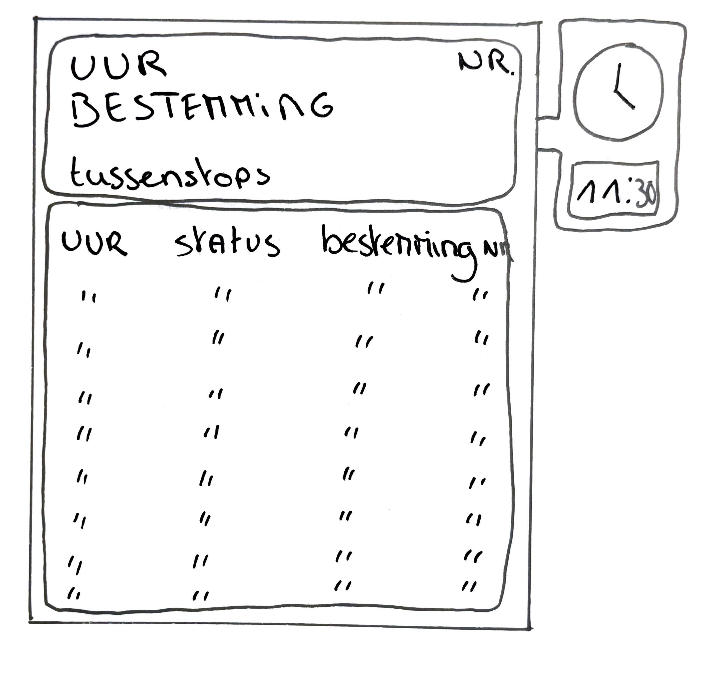
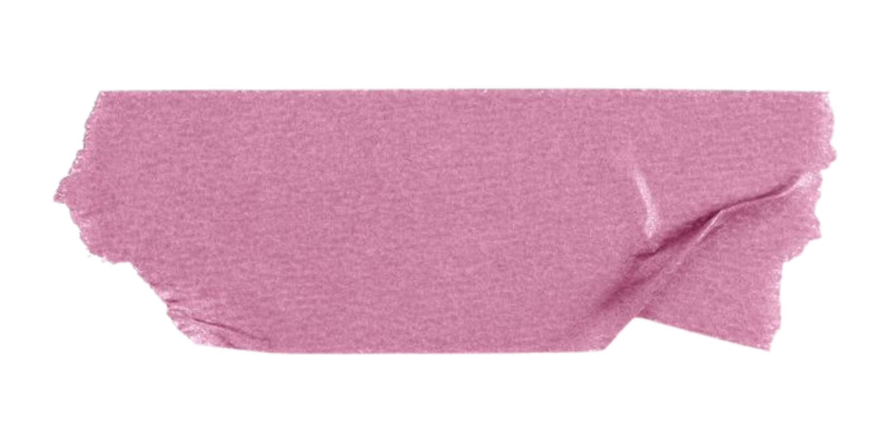
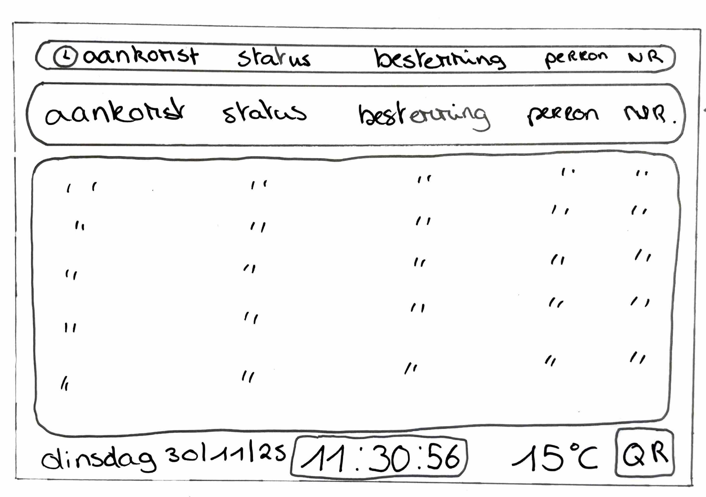
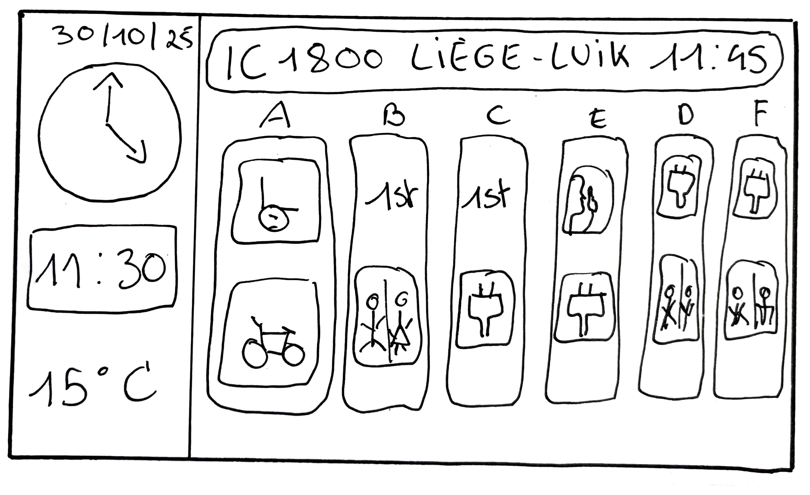

In week 2 gingen we dieper in op wireframes en low-fidelity prototyping. Tijdens het contactmoment bespraken we hoe een eenvoudige schets opgezet kan worden in functie van de Lost in Tra(i)nslation-opdracht.
Op basis van deze sessies verfijnde ik mijn schetsen door meer kolommen toe te voegen en de structuur duidelijker te maken. Hierdoor werd het overzicht verbeterd en konden zowel informatie van dichtbij als van ver goed begrepen worden door de gebruiker. Feedback van klasgenoten hielp me om de hiërarchie van informatie beter te visualiseren.
Perronscherm


Overzichtcherm

Wagonscherm
